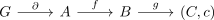
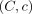
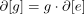
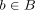
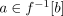

exact sequence of sets
1. Definition
Let

be a sequence in category set , where
 is a group
is a group are sets
are sets
is a pointed set
Then this sequence is said to be exact if
a) acts on  , such that
, such that

b) the map  is set theoretically given by the orbital collapse
c) an element
is set theoretically given by the orbital collapse
c) an element

maps to if and only if there exists a fibre
if and only if there exists a fibre 